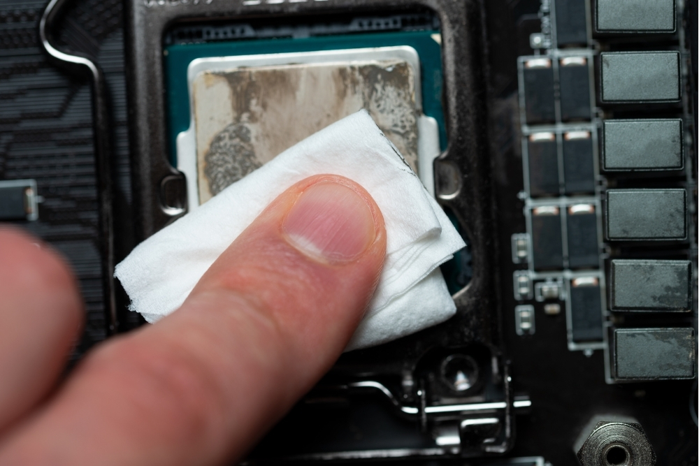
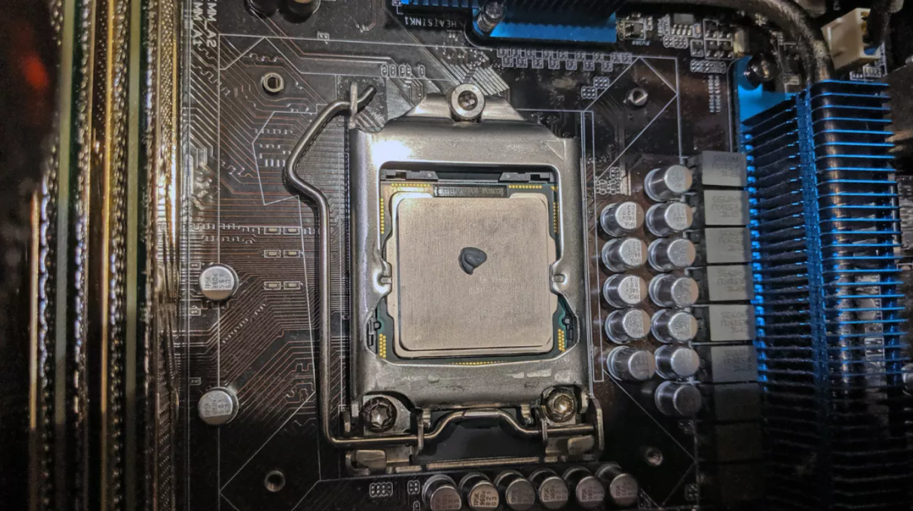
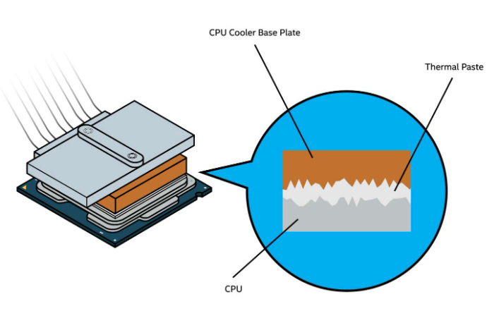

- Ensure CPU Compatibility with the Motherboard
- Backup your Data
- Update your BIOS
- Gather your Tools
- Open your PC Case
- Remove the Case Side Panel
- Remove the Heatsink or Fan
- Clean Off the Old Thermal Paste
- Remove the Old Processor
- Install the New Processor
- Apply Thermal Paste
- Reinstall the Heatsink or Fan
- Close the Computer Up
Before purchasing a CPU you must confirm that your computer will support your new processor.
This can require personal research, but there are many resources online to help.
CPU-Upgrade:
This resource allows you to look up your motherboard, then examine which Intel and AMD chips will work with it.To find out what kind of motherboard you have, go into the Windows search bar and type "msinfo32". This will bring you to the System Information application, where to find the motherboard information look under"BaseBoard Manufacturer" and "BaseBoard Product".
View from System Information application.
Optional but advised. Before swapping out a computer part, you should back up your data,although swapping out your CPU should not affect your hard drive at all.
Optional but advised. Updating your BIOS before replacing a part can help avoid potential problems. The BIOS acts as your motherboard's operating system. It can influence settings like voltage and hardware compatibility. If you are unsure how to do this, Google "(your motherboard model) BIOS update” and it should have further instructions.
In order to upgrade your CPU, you'll need a soft cloth, paper towels, rubbing alcohol, thermal paste, and
screwdriver. The screwdriver needed will depend on how your heatsink and computer case are secured. Optionally you can wear an anti-static band to prevent the buildup of static electricity on the body. Otherwise you will want to find other ways to ground yourself.
To avoid electric showers, take other precautions such as finding a hard surface to
work in, avoid rugs and carpets, wear proper clothing, and disconnect the power.
Before opening the case you must turn the computer off, unplug the power cable, and remove all external cables and attachments.
Next, remove the outermost case retaining screws from the case using your screwdriver. set them aside.
Be careful not to remove the screws that are securing the power supply to the care. These screws are more inset than
the case retaining screws. Removing these may cause the power supply to fall into the computer, causing damage.
Sometimes the panel can be simply lifted off, other times it may still be attached to the case in a slide-lock mechanism.
If you have removed all the screws successfully you should be able to easily loosen and remove it.

Removal of side panel.
The heatsink connects the processor on one end, with the fan on the other. The heatsink collects
and dissipates heat generated by the CPU. You may also have a fan. The fan provides cool air inside your PC.
No matter which one your computer has, you must remove it before you can access the CPU.

General view of heatsink removal.
Removal will depend on what kind of heatsink or fan you have, but generally you will need to unscrew the screws keeping it in place.If you have trouble, find the model number and look it up online for a manual or further instructions.
Remove what you can of the told thermal paste on your heatsink or fan.
Once you replace the CPU you will apply a new coat. So although to leave some old
thermal paste, you do not want an old layer of thermal paste under the new as it would reduce its
conductivity and make the heatsink less effective. To remove it you can use the rubbing alcohol and
paper towel to wipe it off. If small amounts of rubbing alcohol gets on other parts of the computer
it won't cause harm however, make sure to not get any bit of paper towel in there.

Cleaning old thermal paste.
Under the heatsink or fan, you will find the old processor in its housing. There should be a small level to
lift the housing off. You may have to gently press the lever down and to the side first. While doing this
keep in mind that if you are having trouble removing a component you might be approaching it incorrectly.
Usually you do not have to apply a lot of force for removal. Once you have lifted the housing, lift the processor out.

How to remove lever component.
Gently place your new processor where your old one used to be. There will be two small
indentations, so make sure that they match up with the indentation in the housing. The processor
should lay flat when correctly placed. Next, lower the housing and secure it with the metal bar again.

What processor should look like.
Thermal paste should be applied to a processor before installing a cooling solution such as a heatsink
or fan. It allows for an efficient transfer of heat from the base plate of the CPU to the cooler designed to dissipate the heat.

Thermal paste diagram.
When applying the thermal paste, you only need to apply a small amount, roughly the size
of a pea, onto the center of the CPU.

Application of thermal paste.
Repeat and reverse the process that you did to take out the heatsink or fan. Screw everything back in tightly, but not overly tightly where it will bend or break the cooling unit's structure.
Close the case of the computer, screw the panel back in. Reconnect the computer back to its power source and boot it up. Once the computer starts up the BIOS should recognize the presence of a new CPU and run through a short setup process. Follow the prompt, then let the computer restart.